Reaktionszeiten
In diesem Kapitel untersuchen wir Reaktionszeiten, welche, wie binäre Daten, in der kognitiven Neurowissenschaften sehr häufig anzutreffen sind. Drei häufig verwendete Tasks, um Reaktionszeiten zu messen sind
- Reaction tasks
- Go/No Go tasks
- Discrimination tasks
Bei Reaction tasks muss auf einen Reiz reagiert werden, bei Go/No Go tasks muss zwischen zwei Reizen unterschieden, und nur auf einen reagiert werden. Discrimination tasks erfordern komplexere kognitive Leistungen, da eine von zwei Antworten gegeben werden muss, in Abhängigkeit des Reizes.
Wenn wir Reaktionszeiten messen , gehen wir gehen davon aus, dass die Zeit, die benötigt wird, um einen Task auszuführen, uns über den kognitiven Prozess Auskunft gibt. Dabei ist es aber wichtig, dass die Versuchsperson in dieser Zeit wirklich genau den Task ausführt, und nicht nebenher noch andere Prozesse die Rektionszeit beeinflussen, da diese sonst bedeutungslos wäre. Leider ist dies nicht immer der Fall. Bei vielen repetitiven Tasks sind attentional lapses nicht zu vermeiden, und nur bei den einfachsten Tasks ist es möglich, sicherzustellen, dass die VP auch wirklich den intendierten Task ausführt.
Eigenschaften von Reaktionszeiten
Die wichtigsten Merkmale von Reaktionszeiten sind
- Sie sind rechtsschief
- Sie sind nicht normalverteilt
- Streuung (Standardabweichung) steigt ungefähr linear mit wachsendem Mittelwert (Wagenmakers and Brown 2007)
Die Rechtschiefe ist eine natürliche Konsequenz der Tatsache, dass es viele Möglichkeiten gibt, langsamer zu werden, aber nur wenige Möglichkeiten, schneller zu werden. Ausserdem gibt es eine Untergrenze, welche durch unsere Physiologie bestimmt ist. Schellere Reaktionszeiten als 200 Millisekunden sind kaum möglich, und Reaktionszeiten können nicht negativ werden.
Die Konsequenz daraus ist dass Reaktionszeiten nicht normalverteilt sind. In folgender Grafik sind zwei Verteilungen dargestellt. Die gelbe Verteilung ist eine Normalverteilung mit \(\mu = 1\) und \(\sigma = 0.4\), während die graue Vreteilung eine LogNormal Verteilung darstellt.
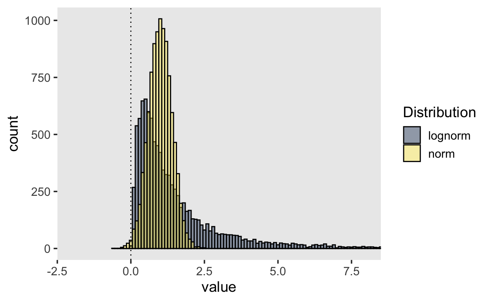
Obwohl die Normalverteilung so aussieht, als könne sie Reaktionszeiten repräsentieren, ist der Wertebereich von $[-, ] nicht dafür geeignet. Ausserdem erlaubt die Normalverteilung keine extremen Werte, und ist nicht asymmetrisch.
Beipiel
Wir illustrieren anhand eines Beispiels, wie Reaktionszeiten dennoch häufig analysiert werden, wie wenn sie normalverteilt wären. Reaktionszeiten werden häufig mit ihrem Mittelwert oder Median zusammengefasst.
Wir untersuchen Daten aus einem Online-Experiement mit 3 Blöcken. In jedem Block mussten Versuchspersonen einen anderen Task ausführen.
- Reaction task
Versuchspersonen drücken SPACE-Taste wenn ein Stimulus erscheint (Quadrat oder Kreis). Outcome Variable ist die Reaktionszeit.
- Go/No-Go task
Versuchspersonen drücken SPACE-Taste wenn Target erscheint (entweder Quadrat oder Kreis). Outcome Variablen sind Reaktionszeit und Antwort.
- Discrimination task
Versuchspersonen drücken F-Taste wenn ein Quadrat erscheint, J-Taste wenn ein Kreis erscheint. Outcome Variable sind Reaktionszeit und Antwort.
Annahme: Versuchspersonen brauchen im Reaction task am wenigsten Zeit, um eine korrekte Antwort zu geben, gefolgt vom Go/No-Go task. Im Discrimination task brauchen Versuchspersonen länger, um korrekte Antworten zu geben.
mentalchronometry <- read_csv("https://raw.githubusercontent.com/kogpsy/neuroscicomplab/main/data/mental-chronometry.csv") %>%
mutate(across(c(subj, block, stimulus, handedness, gender), ~as_factor(.)))
set.seed(98)
subjects <- sample(levels(mentalchronometry$subj), 3)
df <- mentalchronometry %>%
filter(subj %in% subjects)
df %>%
ggplot(aes(RT, fill = block)) +
geom_histogram(alpha = 0.8, position = "identity", color = "black") +
scale_fill_viridis(discrete=TRUE, option="cividis") +
facet_grid(block ~ subj, scales = "free_x") +
theme(legend.position = "none")
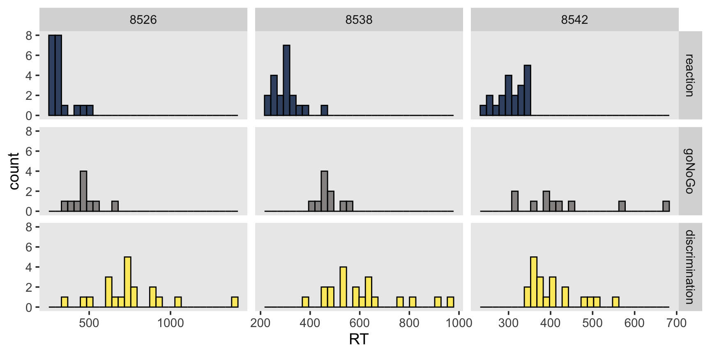
df %>%
filter(subj %in% subjects) %>%
ggplot(aes(y = RT, x = block, fill = block)) +
geom_violin(alpha = 0.6) +
geom_jitter(width = 0.1) +
scale_fill_viridis(discrete=TRUE, option="cividis") +
facet_wrap(~ subj, scales = "free_x") +
theme(legend.position = "none")
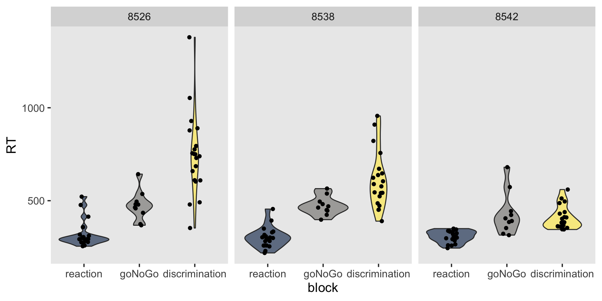
Überlegen Sie sich, was Sie mit diesen Daten machen können.
Welche Kennzahlen eignen sich gut, um die Daten zu beschreiben?
Berechnen Sie die mittlere Reaktionszeit pro Block für jede Person individuell.
Berechnen Sie die mittlere Reaktionszeit pro Block über alle Personen aggregiert.
Daten zusammenfassen
Wir können ohne Ausreisser zu behandeln die Date pro Person pro Block mit Mittelwert, Median und Standarabweichung zusammenfassen.
by_subj %>%
ggplot(aes(block, mean)) +
geom_jitter(width = 0.1)
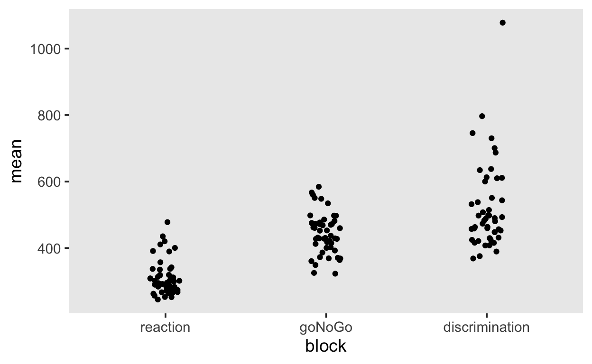
by_subj %>%
ggplot(aes(block, median)) +
geom_jitter(width = 0.1)
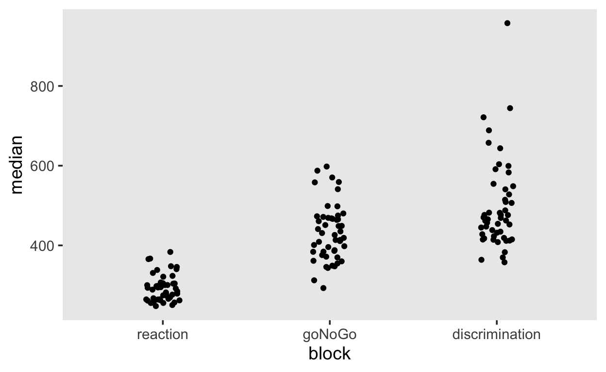
by_subj %>%
ggplot(aes(block, sd)) +
geom_jitter(width = 0.1)
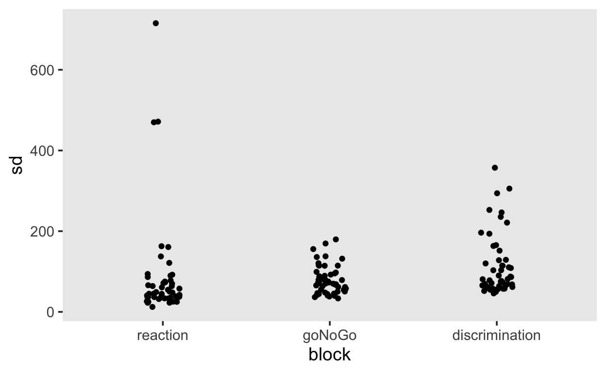
by_subj %>%
ggplot(aes(mean, sd, color = block)) +
geom_point() +
scale_color_viridis(discrete = TRUE, option = "E")
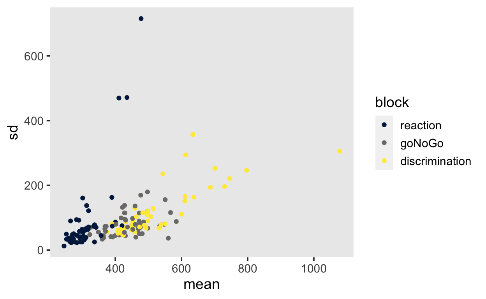
Nun können wir die Mittelwerte einzelnen Blöcke als Mittelwerte der personspezifischen Mittelwerte oder Mediane berechnen.
aggregated_mean <- Rmisc::summarySEwithin(by_subj,
measurevar = "mean",
withinvars = "block",
idvar = "subj",
na.rm = FALSE,
conf.interval = .95)
aggregated_mean %>%
ggplot(aes(block, mean, fill = block)) +
geom_col(alpha = 0.8) +
geom_line(aes(group = 1), linetype = 3) +
geom_errorbar(aes(ymin = mean-se, ymax = mean+se),
width = 0.1, size=1, color="black") +
scale_fill_viridis(discrete=TRUE, option="cividis") +
theme(legend.position = "none")
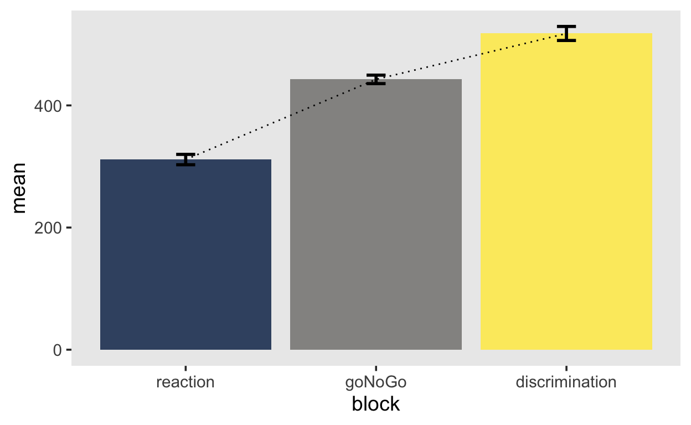
Sowohl Mittelwert als auch Median sind jedoch problematisch als Masse der zentralen Tendenz für asymmetrische Verteilungen. Der Mittelwert kann durch eine hohe Schiefe und Ausreissern verschoben werden, und repräsentiert die zentrale Tendenz der Verteilung nicht besonders gut. Der Median ist ein besseres Mass für eine typische Beobachtung aus dieser Verteilung, ist jedoch nicht immer erwartungstreu.
Data cleaning
Wir können versuchen Ausreisser zu identifizieren.
Cleaning by subject
Unser Ziel ist es, die Daten einer Versuchsperson zu entfernen, falls diese Person in einer experimentellen Bedingung eine mittlere RT hat, welche mehr als 2 Standardabweichungen vom Gesamtmittelwert liegt.
# summary stats (means) for participants
sum_stats_participants <- mentalchronometry %>%
group_by(subj, block) %>%
dplyr::summarise(
mean_P = mean(RT))
# summary stats (means and SDs) for conditions
sum_stats_conditions <- mentalchronometry %>%
group_by(block) %>%
dplyr::summarise(
mean_C = mean(RT),
sd_C = sd(RT))
sum_stats_participants <-
full_join(
sum_stats_participants,
sum_stats_conditions,
by = "block") %>%
mutate(
outlier_P = abs(mean_P - mean_C) > 2 * sd_C)
# show outlier participants
sum_stats_participants %>%
filter(outlier_P == 1) %>%
show()
# A tibble: 1 x 6
# Groups: subj [1]
subj block mean_P mean_C sd_C outlier_P
<fct> <fct> <dbl> <dbl> <dbl> <lgl>
1 8505 discrimination 1078. 518. 185. TRUE Wir haben also eine Person, welche in einer Bedingung (discrimination) eine mittlere RT hat, welche mehr als 2 Standardabweichungen vom Gesamtmittelwert dieser Bedingung liegt.
Weiter können wir die RT für jeden Trial in jeder Bedingung plotten. Es ist klar, dass die mittlere RT im discrimination aufgrund mehrerer Ausreisser zustande kommt.
mentalchronometry %>%
semi_join(sum_stats_participants %>% filter(outlier_P == 1),
by = c("subj")) %>%
ggplot(aes(x = trial_number, y = RT)) +
geom_point() +
facet_wrap(~block)
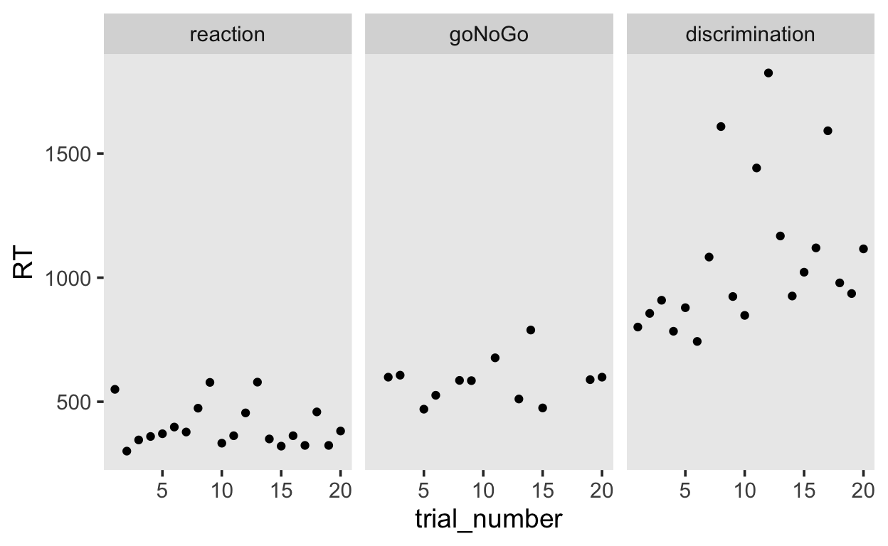
Wir könnten diese Person ganz ausschliessen.
excluded <- sum_stats_participants %>%
filter(outlier_P == 1)
excluded
# A tibble: 1 x 6
# Groups: subj [1]
subj block mean_P mean_C sd_C outlier_P
<fct> <fct> <dbl> <dbl> <dbl> <lgl>
1 8505 discrimination 1078. 518. 185. TRUE mentalchronometry_cleaned <- mentalchronometry %>%
filter(!(subj %in% excluded$subj)) %>%
mutate(subj = fct_drop(subj))
Cleaning by trial
Nun wollen alle Trials identifizieren, welche mehr als 2 Standardabweichungen vom Bedingungs-Gesamtmittelwert liegen. Ausserdem entfernen wir alle RTs, welche unter 100 Millisekunden liegen.
# mark individual trials as outliers
mentalchronometry_cleaned <- mentalchronometry_cleaned %>%
full_join(
sum_stats_conditions,
by = "block") %>%
mutate(
trial_type = case_when(
abs(RT - mean_C) > 2 * sd_C ~ "zu weit vom Mittelwert",
RT < 100 ~ "< 100ms",
TRUE ~ "OK") %>%
factor(levels = c("OK", "< 100ms", "zu weit vom Mittelwert")),
trial = row_number())
# visualize outlier trials
mentalchronometry_cleaned %>%
ggplot(aes(x = trial, y = RT, color = trial_type, shape = trial_type)) +
geom_point(alpha = 0.6) +
geom_point(data = filter(mentalchronometry_cleaned, trial_type != "OK"),
alpha = 0.9) +
facet_grid(~block) +
scale_color_manual(values = c("gray70", "red", "steelblue"))
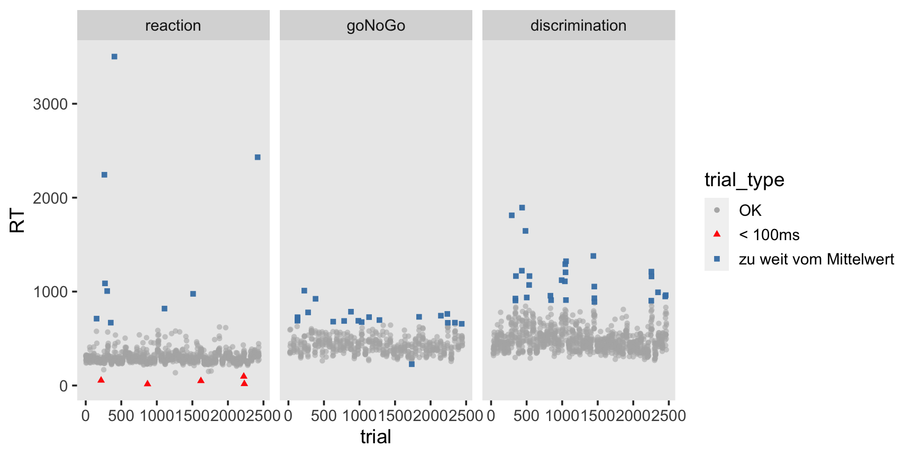
Wir haben insgesamt 63 Trials, welche nach unseren Kriterien Ausreisser sein könnten.
mentalchronometry_cleaned %>%
filter(trial_type != "OK")
# A tibble: 63 x 11
subj trial_number block stimulus RT handedness gender mean_C
<fct> <dbl> <fct> <fct> <dbl> <fct> <fct> <dbl>
1 8552 11 goNoGo square 690 Right male 442.
2 8552 14 goNoGo square 727 Right male 442.
3 8552 17 goNoGo square 697 Right male 442.
4 8552 18 goNoGo square 720 Right male 442.
5 8551 3 reaction square 712 right male 311.
6 8550 16 reaction square 54 right male 311.
7 8550 4 goNoGo circle 1010 right male 442.
8 8549 11 reaction square 2244 Righthand… male 311.
9 8549 20 reaction square 1087 Righthand… male 311.
10 8549 12 goNoGo square 778 Righthand… male 442.
# … with 53 more rows, and 3 more variables: sd_C <dbl>,
# trial_type <fct>, trial <int>Diese 63 Trials entfernen wir nun.
mentalchronometry_cleaned <- mentalchronometry_cleaned %>%
filter(trial_type == "OK")
mentalchronometry_cleaned %>%
ggplot(aes(x = RT, color = block, fill = block)) +
geom_density(alpha = 0.3) +
scale_fill_viridis(discrete=TRUE, option="cividis") +
scale_color_viridis(discrete=TRUE, option="cividis")
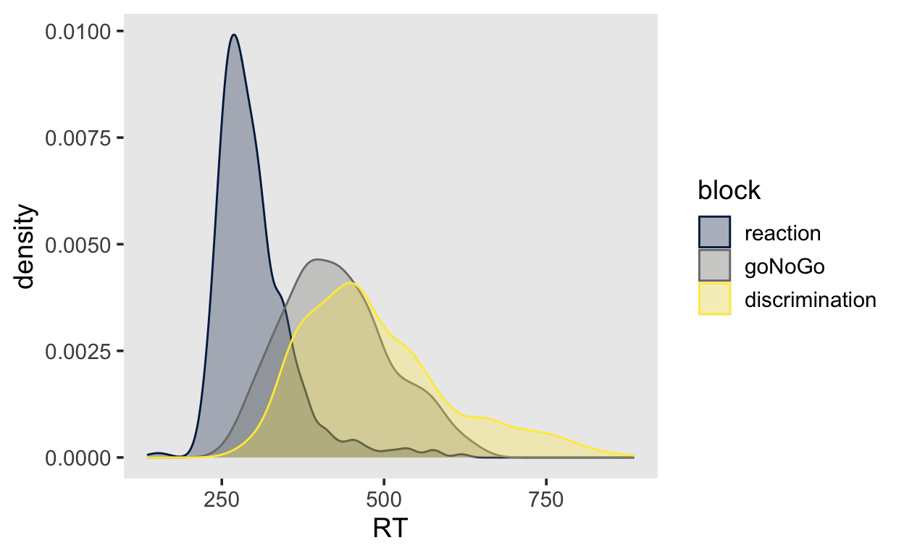
by_subj_cleaned <- mentalchronometry_cleaned %>%
group_by(subj, block) %>%
dplyr::summarise(across(RT, funs, .names = "{.fn}"))
aggregated_cleaned <- Rmisc::summarySEwithin(by_subj_cleaned,
measurevar = "mean",
withinvars = "block",
idvar = "subj",
na.rm = FALSE,
conf.interval = .95)
aggregated_cleaned %>%
ggplot(aes(block, mean, fill = block)) +
geom_col(alpha = 0.8) +
geom_line(aes(group = 1), linetype = 3) +
geom_errorbar(aes(ymin = mean-se, ymax = mean+se),
width = 0.1, size=1, color="black") +
scale_fill_viridis(discrete=TRUE, option="cividis") +
theme(legend.position = "none")
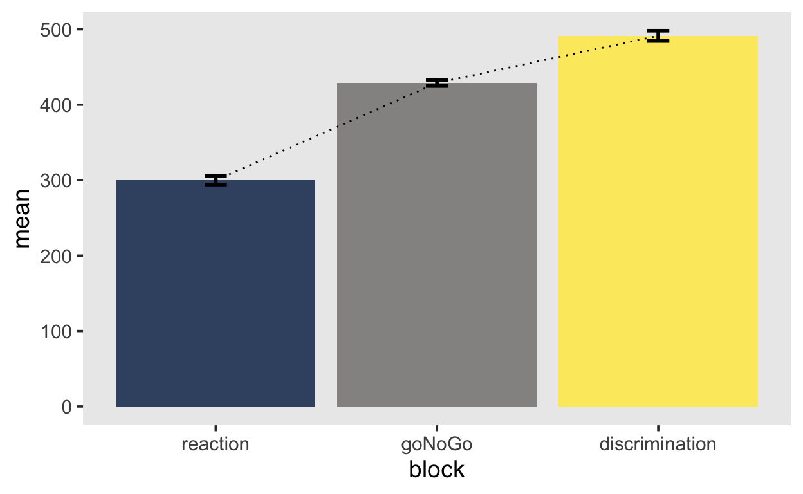
Ein soches Data Cleaning ist zwar in den meisten Fällen notwendig, aber leider etwas willkürlich, und gibt dem Forscher/der Forscherin sehr viele Freiheiten (researcher degrees of freedom). Es ist deshlab wichtig, Ausschlusskriterien für Personen und einzelne Trials vor der Analyse festzulegen, und offen zu berichten.
Shift Function
In den Neurowissenschaften wird ein Vergleich zwischen Gruppen oder Bedingungen oft wie oben beschrieben durchgeführt. Wir machen dabei folgende Annahmen:
- Die RT Verteilungen unterscheiden sich nur in ihrer zentralen Tendenz, aber nicht in anderen Aspekten.
- Die typische Beobachtung kann durhc den Mittelwert repräsentiert werden, d.h. der Mittelwert ist eine ausreichende Statistik der Verteilung.
Diese Annahmen sind sehr stark, und meistens falsch. Es gibt keinen Grund anzunehmen, dass sich Unterschiede in RT Verteilungen nur in der zentralen Tendenz manifestieren.
Anstelle einer Zusammenfassung anhand von Mittelwert und Standardabweichung können wir auch anhand von Grafiken und informativeren Kennzahlen die Unterschiede zwischen Verteilungen darstellen.
- t-Test und ANOVA sind nicht immer robust gegenüber Verletzungen der Annahmen und Ausreissern.
- Keine Signifikanz ist keine Evidenz für einen fehlenden Effekt
- Verteilungen können dieselbe zentrale Tendenz haben, sich aber in den Extrembereichen unterscheiden.
Grafik 1 zeigt eine traditionelle Level 1 / Level 2 Analyse. In diesem Datensatz wurden 2 Gruppen (between) in 2 Bedingungen (within) getest. A) zeigt die Mittelwerte und Standarfehler. Eine ANOVA würde hier eine signifikante Gruppen x Bedingung Interaktion zeigen. B) zeigt die Unterschiede zwischen den Bedingungen für alle Vpn innerhalb der beiden Gruppen. C) zeigt, dass die Scores in Gruppe in Bediungung 2 grösser sind als in Bedingung 1. Weiter scheinen diese Differenzen grösser zu werden, mit wachsendem Score in Bedingung 1. Diese beide Zusammenhänge existieren nicht in Gruppe 2. D) zeigt einen Scatterplot der beiden Bedingungen. Während die Punkte der Gruppe 2 auf der geraden liegen, ist auch hier ersichtlich, dass bei Gruppe 1 der Unterschied zwischen den Bedingungen bei wachsendem SCore in Bedingung 1 ansteigt.

Figure 1: Grafische Darstellung von Reaktionszeiten (aus Rousselet, Foxe, and Bolam (2016)).
Dies sind lediglich unterschiedliche Darstellungen derselben Daten. Eine Standardtest, wie z.B. eine ANOVA, bietet in diesem Fall nicht mehr Information als eine grafische Darstellung.
Sowohl der Mittelwert als auch der Median sind nicht ideal, um schiefe Verteilungen zusammenfassen. Solche Verteilungen sind asymmetrisch, und die Asymmetrie selber kann sich zwischen Bedingungen unterscheiden, so dass Masse der zentralen Tendenz und der Streuung nicht ausreichend sind (keine sogenannten sufficient statistics) (Rousselet, Foxe, and Bolam 2016).
Ein Ansatz, um die ganze Verteilung zu benutzen, anstatt die Verteilung durch eine Kennzahl zusammenzufassen, ist die empirischen Quantile der Daten zu berechnen. Wenn wir zwei Gruppen oder Bedingungen vergleichen möchten, können wir zum Beispiel die Dezile berechen, und dann für jedes Dezil die Differenz berechen. Wenn wir anschliessend die Quantile einer Bedingung gegen die Differenzen plotten, erhalten eine sogennante Shift Function. Diese hat ihren Namen, weil sie anzeigt, in welche Richtung und um wieviel man eine Verteilung verschieben muss, um sie einer anderen Verteilung anzugleichen.
Beispiel 1: unterschiedliche Streuung
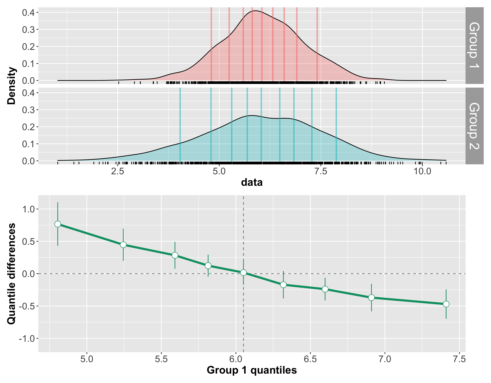
Die erste Grafik ziegt 2 RT Verteilungen, welche sich bezüglich ihrer Streuung, aber nicht ihrer zentralen Tendenz unterscheiden. Die eingezeichneten Linien sind die Dezile der Verteilung. Bei Gruppe 2 sind die äusseren Dezile im Vergleich zur Gruppe 1 extremer. Die zweite Grafik zeigt die Dezile der 1. Grupper auf der X-Achse, und die Differenzen der Dezile (Gruppe 1 - Gruppe 2) auf der Y-Achse.
Wir können die Grafik so lesen: Im Median unterscheiden sich die Gruppen nicht. Bei den oberen Dezilen ist die Differenz negativ, d.h. Gruppe 1 hat kleinere Werte als Gruppe 2. Dies bedeutet, dass man die oberen Dezilen der Gruppe 2 nach links verschieben müsste, um sie gleich der Gruppe 1 zu machen.
Bei den unteren Dezilen haben wir das umgekehrte Muster. Hier sind die Differenzen positiv, was bedeutet, dass wir wir unteren Quantile der Gruppe 2 nach rechts verschieben müssten. Gruppe 2 hat als schnellere kurze und längere langsame Reaktionszeiten.
Beispiel 2: unterschiedliche zentrale Tendenz und Streuung
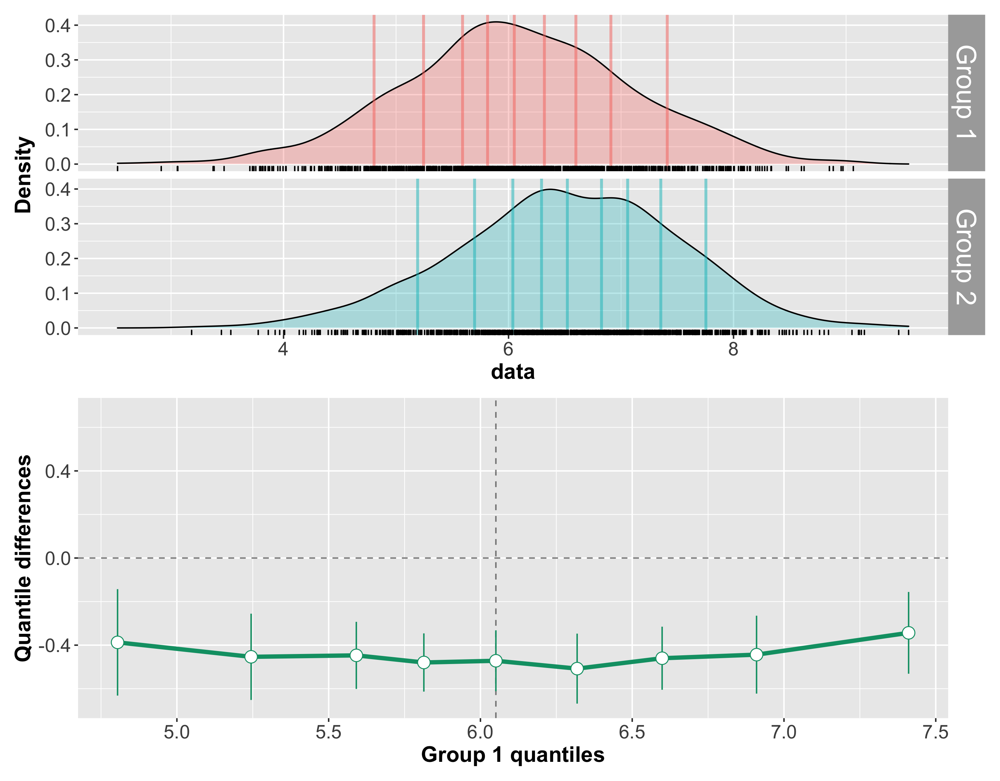
In diesem Beispiel sind alle Dezile der Gruppe 2 gegenüber der Gruppe 1 nach rechts verschoben. Die Shift Funktion ist dementsprechend beinahe eine gerade Linie. Bei jedem Dezil müssten wir die Gruppe 2 uniform nach links verschieben, um sie der Gruppe 2 anzunähern. Hier kann man also sagen, dass Gruppe 1 schneller als Gruppe 2 ist.
Beispiel 3: Positive right tail shift
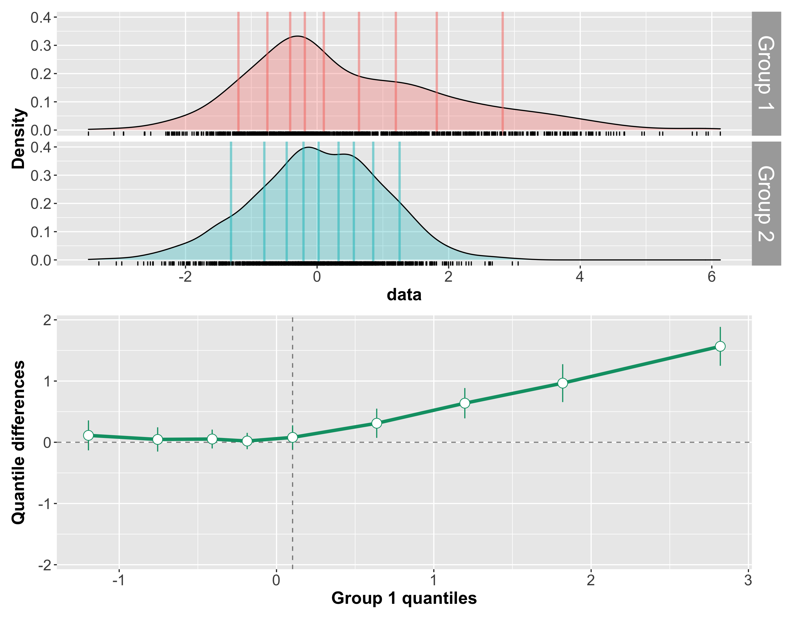
Im dritten Beispiel unterscheiden sich die beiden Gruppen vor allem am rechten Ende der Verteilung, während die Gruppen sich in dem unteren Dezile nicht unterscheiden. Dies führt zu einer Differenz von Null bis zum Median, und einer steigenden Differenz in den oberen Dezilen.
Shift Function von Hand
Eine Shift Function von Hand zu berechen ist relativ einfach, aber selbstverständlich gibt es dafür ein R Package (rogme). Hier werden wir aber zunächst für eine Person in zwei Bedingungen die Quantile per Hand berechnen, um ein Verständnis dafür zu entwicklen, wie eine Shift Function verwendet werden kann.
Wir wählen aus dem mentalchronometry Dataframe, aus dem die Ausreisser entfernt wurden, eine Person und die beiden Tasks goNoGo und discrimination aus.
deciles <- seq(0.1, 0.9, length.out = 9)
quantilefun <- function(x) {
as_tibble(t(quantile(x$RT, probs = deciles, type = 8)))
}
df_quantiles <- df %>%
group_by(block) %>%
nest() %>%
mutate(quantiles = map(data, ~ quantilefun(.x))) %>%
unnest(quantiles) %>%
pivot_longer(`10%`:`90%`, names_to = "quantile", values_to = "RT") %>%
arrange(block)
Eine einfachere Variante ist mit der neuesten Version von summarise möglich. quibble ist hier eine selber definierte Funktion, welche die Quantile berechnet und in einem tibble speichert.
df_quantiles_2 ist nun ein Dataframe mit 3 Variablen: block, RT und quantile.
df_quantiles_2
# A tibble: 18 x 3
# Groups: block [2]
block RT quantile
<fct> <dbl> <dbl>
1 goNoGo 300. 0.1
2 goNoGo 310. 0.2
3 goNoGo 318. 0.3
4 goNoGo 334. 0.4
5 goNoGo 344. 0.5
6 goNoGo 372. 0.6
7 goNoGo 418. 0.7
8 goNoGo 448. 0.8
9 goNoGo 465. 0.9
10 discrimination 347. 0.1
11 discrimination 359 0.2
12 discrimination 381. 0.3
13 discrimination 387. 0.4
14 discrimination 412 0.5
15 discrimination 436. 0.6
16 discrimination 449. 0.7
17 discrimination 461. 0.8
18 discrimination 500. 0.9Wir müssen nun den Dataframe ins “wide” Format konvertieren, um zwei Spalten für die “goNoGo” und “discrimination” Bedingungen zu erhalten, und können danach die Differenz berechnen.
df_quantile_differences <- df_quantiles_2 %>%
pivot_wider(names_from = "block", values_from = "RT") %>%
mutate(`goNoGo - discrimination` = goNoGo - discrimination)
df_quantile_differences %>%
ggplot(aes(x = goNoGo, y = `goNoGo - discrimination`)) +
geom_hline(yintercept = 0, linetype = 3) +
geom_vline(xintercept = df_quantile_differences %>%
filter(quantile == "50%") %>%
select(goNoGo) %>%
pull(), linetype = 3) +
geom_line(aes(group = 1), color = "steelblue", size = 2) +
geom_point(shape = 21, color = "steelblue", fill = "white", size = 5, stroke = 1) +
coord_cartesian(ylim = c(-100, 100))
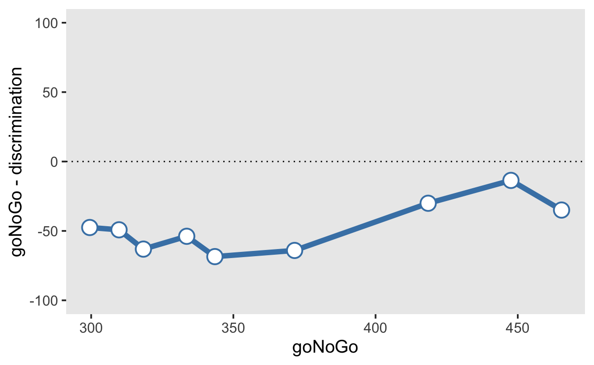
In diesem Fall erkennen wir, dass die Reaktionszeiten bei jedem Dezil im “discrimination” Task nach rechts verschoben sind. Dies bedeutet, dass im “discrimination” Task sowohl die schnellen als auch die langsamen Antworten langsamer sind als im “goNoGo” Task.
df %>%
ggplot(aes(x = RT, color = block, fill = block)) +
geom_density(alpha = 0.3) +
scale_fill_viridis(discrete=TRUE, option="cividis") +
scale_color_viridis(discrete=TRUE, option="cividis")
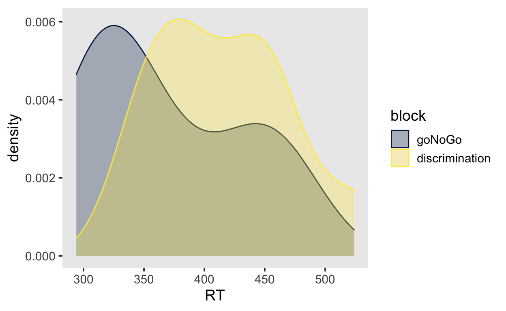
Versuchen Sie nun, ein Shift Function für zufällig ausgewählte Versuchspersonen in 2 beliebig ausgewählen Bedingungen grafisch darzustellen.
Shift Function (rogme)
Mit dem rogme (Robust Graphical Methods For Group Comparisons) Package lassen sich solche Shift Functions ohne grossen Aufwand für Gruppenvergleiche grafisch darstellen. Dies ist sowohl für unabhängige als auch abhängige Gruppen, sowie messwiederholte Bedingungen, möglich.
Das rogme Package ist nicht auf CRAN, kann aber so installiert werden:
install.packages("remotes")
remotes::install_github("GRousselet/rogme")
Dies muss nur einmal ausgeführt werden; wenn es installiert ist, müssen wir das Package laden:
Für den Vergleich zweier messwiederholter Tasks in nur einer Person benutzen wir die Funktion shiftdhd_pbci(), welche die Quantildifferenzen und Konfodenzintervalle berechnet.
Die Konfidenzintervalle werden mit der nichtparametrischen percentile bootstrap Methode geschätzt. Dabei werden die Daten quasi als stellvertetend für die “Population” genommen, und ganz viele Stichproben werden durch Ziehen mit Zurücklegen aus der Originalstichprobe generiert. Aus jeder dieser neuen Stichproben werden Quantile berechnet, und aus der Verteilung der Quantile werden Konfidenzintervalle als [0.025, 0.975] Quantile berechnet.
Für den Vergleich zweier messwiederholter Bedingungen interessieren wir uns dafür, ob und wie sich die typische Reaktionszeiten zwischen den Bedingungen voneinander unterscheiden, und zwar für jede Person einzeln sowie gemittelt über alle Personen. Dies machen wir mit der hierarchischen Version der Shift Function, hsf_pb().
Wir simulieren hier Reaktionszeiten von 30 Versuchspersonen, welche in zwei Bedingungen gemesen wurden. Die Reaktionszeiten werden als Zufallszahlen einer Shifted Lognormal Verteilung modelliert.
# generate data: matrix participants x trials
data1 <- matrix(brms::rshifted_lnorm(nt*np,
meanlog,
sdlog,
shift), nrow = np)
data2 <- matrix(brms::rshifted_lnorm(nt*np,
1.1 * meanlog,
1.1 * sdlog,
shift), nrow = np) + ES
df_sim <- tibble(rt = c(as.vector(data1), as.vector(data2)),
cond = factor(c(rep("cond1", nt*np),
rep("cond2", nt*np))),
id = factor(rep(seq(1, np), nt*2)))
df_sim %>%
group_by(id, cond) %>%
summarise(rt = median(rt)) %>%
Rmisc::summarySEwithin(measurevar = "rt",
withinvars = "cond",
idvar = "id",
na.rm = FALSE,
conf.interval = .95)
cond N rt sd se ci
1 cond1 30 1.844454 0.2037001 0.03719038 0.07606287
2 cond2 30 2.550013 0.2037001 0.03719038 0.07606287Nun berechnen wir nach derselben Methode wie oben die Differenzen zwischen den Bedingungen für jedes Quantil für jede Person. Danach berechnet hsf_pb() den 20% getrimmten Mittelwert (“20% trimmed mean”) für jedes Quantil und schätzt Konfidenzintervalle mit der “percentile bootstrap” Methode.
out <- rogme::hsf_pb(df_sim, rt ~ cond + id)
Nun können wir mit der Funktion plot_hsf_pb() die mittlere Shift Function, sowie die Shift Functions aller Personen grafisch darstellen. Bei keinem Dezil ist die Null im Konfidenzinterval enthalten. Wir können nach dieser Methode also davon ausgehen, dass sie die erste Bedingung insgesamt (bei schnellen und langsameren Reaktionszeiten) kürzere Reaktionszeiten als die zweite Bedingung hat. Ab dem 7. Dezil ist ausserdem zu sehen, dass die Differenz grösser wird. Das könnte darauf hinweisen, dass in der zweiten Bedingung die Personen nicht nur insgesamt langsamer sind, sondern auch variabler. Dieser Effekt gilt jedoch nicht bei allen Personen.
p <- rogme::plot_hsf_pb(out, interv = "ci")
p
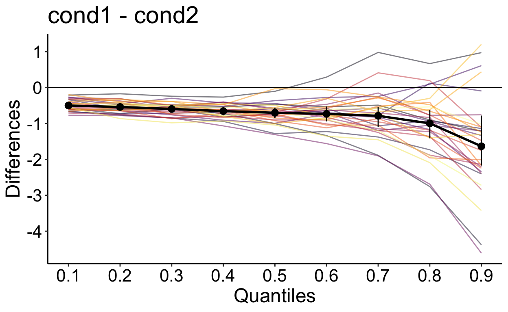
Shift Function Beispiel
Wir schauen uns Daten aus einem Lexical Decision Task (Wagenmakers and Brown 2007) an, bei dem Versuchspersonen Wörter als entweder word oder non-word klassifizieren mussten. Es ist bekannt, dass Wörter welche häufiger vorkommen schneller klassifiziert werden können, als seltene Wörter. In diesem Experiment mussten Versuchspersonen diesen Task unter zwei Bedingungen durchführen. In der speed Bedingung mussten sie sich so schnell wie möglich entscheiden, in der accuracy Bedingung mit so wenig Fehler wie möglich.
Hier untersuchen wir also den Unterschied in der Reaktionszeit zwischen zwei “within” Bedingungen. Die Daten befinden sich im Package rtdists, welches zuerst installiert werden sollte.
library(rtdists)
data(speed_acc)
speed_acc <- speed_acc %>%
as_tibble()
df_speed_acc <- speed_acc %>%
# zwischen 180 ms and 3000 ms
filter(rt > 0.18, rt < 3) %>%
# zu Character konvertieren (damit filter funktioniert)
mutate(across(c(stim_cat, response), as.character)) %>%
# Korrekte Antworten
filter(response != 'error', stim_cat == response) %>%
# wieder zu Factor konvertieren
mutate(across(c(stim_cat, response), as_factor))
df_speed_acc
# A tibble: 27,936 x 9
id block condition stim stim_cat frequency response rt
<fct> <fct> <fct> <fct> <fct> <fct> <fct> <dbl>
1 1 1 speed 5015 nonword nw_low nonword 0.7
2 1 1 speed 6481 nonword nw_very_low nonword 0.46
3 1 1 speed 3305 word very_low word 0.455
4 1 1 speed 4468 nonword nw_high nonword 0.773
5 1 1 speed 1047 word high word 0.39
6 1 1 speed 5036 nonword nw_low nonword 0.603
7 1 1 speed 1111 word high word 0.435
8 1 1 speed 6561 nonword nw_very_low nonword 0.524
9 1 1 speed 1670 word high word 0.427
10 1 1 speed 6207 nonword nw_very_low nonword 0.456
# … with 27,926 more rows, and 1 more variable: censor <lgl>Wir schauen uns vier Versuchspersonen grafisch an:
data_plot <- df_speed_acc %>%
filter(id %in% c(1, 8, 11, 15))
data_plot %>%
ggplot(aes(x = rt)) +
geom_histogram(aes(fill = condition), alpha = 0.5, bins = 60) +
facet_wrap(~id) +
coord_cartesian(xlim=c(0, 1.6)) +
scale_fill_viridis(discrete = TRUE, option = "E")
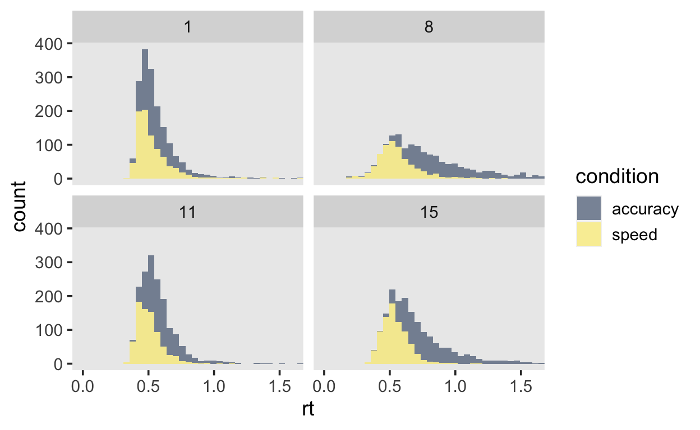
Was würden Sie anhand dieser vier Histogramme erwarten?
Wir berechnen nun die Differenzen der Dezile zwischen den Bedingungen für jede Versuchsperson.
out_speed_acc <- rogme::hsf_pb(df_speed_acc, rt ~ condition + id)
p_speed_acc <- rogme::plot_hsf_pb(out_speed_acc, interv = "ci")
p_speed_acc
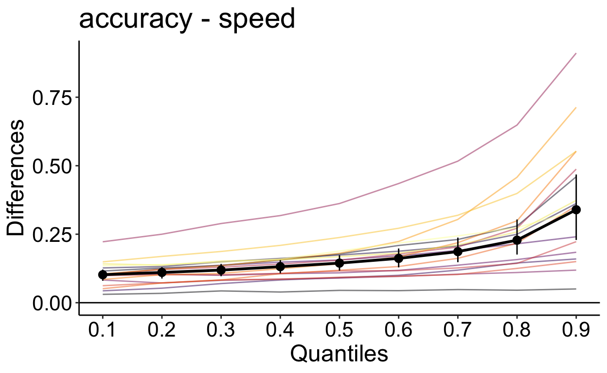
In dieser Grafik sehen wir auf der X-Achse die Dezile der accuracy Bedingung und auf er Y-Achse die Differenz accuracy - speed. Die Differenz ist bei jedem Dezil positiv und scheint steig grösser zu werden. Die accuracy Bedingung führt also zu längeren und variableren Reaktionszeiten. Die Bedingungen unterscheiden sich im Median, aber wenn wir nur das berücksichtigt hätten, würden wir verpassen, dass sich die Verteilungen sehr stark am rechten Ende der Verteilung unterscheiden.
Zum Vergleich berechnen wir noch Bedingungsmittelwerte der Median Reaktionszeiten.
by_subject <- df_speed_acc %>%
group_by(id, condition) %>%
summarise(mean = median(rt))
agg <- Rmisc::summarySEwithin(by_subject,
measurevar = "mean",
withinvars = "condition",
idvar = "id",
na.rm = FALSE,
conf.interval = .95)
agg %>%
ggplot(aes(condition, mean, fill = condition)) +
geom_col(alpha = 0.8) +
geom_line(aes(group = 1), linetype = 3) +
geom_errorbar(aes(ymin = mean-se, ymax = mean+se),
width = 0.1, size=1, color="black") +
scale_fill_viridis(discrete=TRUE, option="cividis") +
theme(legend.position = "none")
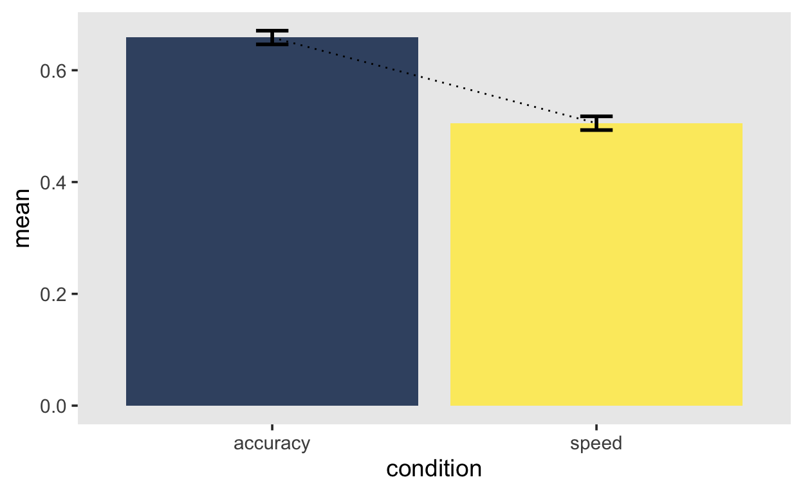
Reaktionszeitverteilungen
Im nächsten Schritt können wir uns überlegen, wie wir vorgehen würden, wenn wir die ganzen Reaktionszeitverteilungen modellieren wollen. Dabei müssen wir folgende Tatsachen beachten: Reaktionszeiten sind positiv und rechtsschief. Ausserdem müssen wir berücksichtigen, dass Zeiten eine natürliche Untergrenze haben können, welche grösser als Null ist, da es physiologisch unmöglich ist, in weniger als 100-200 Millisekunden zu reagieren. Diese Untergrenze kann aber stark von der Aufgabe abhängig sein, welche ausgeführt wird.
Es gibt eine Menge Verteilungen, welche eine Wertebereich \([0, \infty]\) haben. Eine Teilmenge dieser Verteilungen kommen für Reaktionszeiten besonder in Frage, da sie 3 Parameter haben. Diese Parameter werden häufig als difficulty, scale und shift Parameter bezeichnet.
Unter dieser URL gibt es eine sehr hilfreiche Übersicht über Reaktionszeitverteilungen.
tibble(normal = rnorm(1e4,
mean = 1,
sd = 1),
lognormal = brms::rshifted_lnorm(1e4,
meanlog = 0.5,
sdlog = 0.1,
shift = 0),
shifted_lognormal = brms::rshifted_lnorm(1e4,
meanlog = 0.5,
sdlog = 0.1,
shift = 1)) %>%
pivot_longer(everything(),
names_to = "Distribution",
values_to = "x") %>%
ggplot(aes(x, fill = Distribution)) +
geom_histogram(bins = 60, position = "identity") +
scale_fill_viridis(discrete = TRUE, option = "E", begin = 0.2) +
xlab("") + ylab("")

Auf derselben Website wie oben finden Sie eine interaktive Webapp, mit welcher Sie verschiede Reaktionszeitverteilungen visualisieren können (Lindeløv 2021).
Shifted Lognormal
Wir interessieren uns hier vor allem für die Shifted Lognormal Verteilung. Diese hat die Dichtefunktion
\[ f(x) = \frac{1} {(x - \theta)\sigma\sqrt{2\pi}} exp\left[ -\frac{1}{2} \left(\frac{ln(x - \theta) - \mu }{\sigma} \right)^2 \right] \] mit den drei Paramtern \(\mu\), \(\sigma\) und \(\theta\). \(\theta\) verschiebt die ganze Verteilung entlang der X-Achse, während \(\mu\) und \(\sigma\) die Form beeinflussen.
\(\mu\) wird als difficulty Parameter aufgefasst und beeinflusst sowohl Median als auch Mittelwert. Der Median ist \(\theta + exp(\mu)\).
\(\sigma\) ist der scale Parameter (Standardabweichung) und hat einen Einfluss auf Mittelwert, aber nicht auf den Median.
Der Mittelwert ist \(\theta + exp\left( \mu + \frac{1}{2}\sigma^2\right)\)
Von Interesse ist vor hauptsächlich der Parameter \(\mu\), weil davon ausgegangen wird, dass Änderungen der Task Schwierigkeit sich vor allem darin manifestieren.
Wir können diese Verteilung mit brms an unsere Date fitten. Wir müssen dabei aber beachten, dass die Parameter \(\mu\) und \(\sigma\) auf der Logarithmusskala sind. Wenn wir z.B. \(\mu\) mit einem linearen Modell vorhersagen, müssen wir die Koeffizienten exponentieren,damit sie wieder auf der RT Skala sind.
\[ y_i \sim Shifted Lognormal(\mu, \sigma, \theta) \]
\[ log(\mu) = b_0 + b_1 X_1 + ...\] Die Parameter \(\sigma\) und \(\theta\) können ebenfalls vorhergesagt, oder einfach nur geschätzt werden.
\[ \sigma \sim Dist(...) \]
\[ \theta \sim Dist(...) \]
Die Default Prior Verteilungen sind:
priors <- get_prior(rt ~ condition + (1|id),
family = shifted_lognormal(),
data = df_speed_acc)
priors %>%
as_tibble() %>%
select(1:4)
# A tibble: 8 x 4
prior class coef group
<chr> <chr> <chr> <chr>
1 "" b "" ""
2 "" b "conditionspeed" ""
3 "student_t(3, -0.6, 2.5)" Intercept "" ""
4 "uniform(0, min_Y)" ndt "" ""
5 "student_t(3, 0, 2.5)" sd "" ""
6 "" sd "" "id"
7 "" sd "Intercept" "id"
8 "student_t(3, 0, 2.5)" sigma "" "" Der shift Parameter \(\theta\) heisst hier aus Kompatibilitätsgründen mit anderen Modellen ndt (non-decision time), und hat eine uniforme Verteilung zwischen 0 und der kürzesten Reaktionszeit im Datensatz.
Der Koeffizient conditionspeed hat per Default einen flachen Prior. Da dieser auf der Logarithmusskala ist, erwarten wir nicht, dass der Betrag sehr gross sein wird.
priors <- prior(normal(0, 0.1), class = b)
m1 <- brm(rt ~ condition + (1|id),
family = shifted_lognormal(),
prior = priors,
data = df_speed_acc,
file = 'models/m1_shiftedlognorm')
summary(m1)
Family: shifted_lognormal
Links: mu = identity; sigma = identity; ndt = identity
Formula: rt ~ condition + (1 | id)
Data: df_speed_acc (Number of observations: 27936)
Samples: 4 chains, each with iter = 2000; warmup = 1000; thin = 1;
total post-warmup samples = 4000
Group-Level Effects:
~id (Number of levels: 17)
Estimate Est.Error l-95% CI u-95% CI Rhat Bulk_ESS
sd(Intercept) 0.15 0.03 0.11 0.22 1.01 454
Tail_ESS
sd(Intercept) 885
Population-Level Effects:
Estimate Est.Error l-95% CI u-95% CI Rhat Bulk_ESS
Intercept -0.68 0.04 -0.76 -0.61 1.01 352
conditionspeed -0.40 0.00 -0.41 -0.39 1.00 1652
Tail_ESS
Intercept 573
conditionspeed 1676
Family Specific Parameters:
Estimate Est.Error l-95% CI u-95% CI Rhat Bulk_ESS Tail_ESS
sigma 0.37 0.00 0.36 0.37 1.00 1536 1559
ndt 0.17 0.00 0.17 0.18 1.01 1018 1360
Samples were drawn using sampling(NUTS). For each parameter, Bulk_ESS
and Tail_ESS are effective sample size measures, and Rhat is the potential
scale reduction factor on split chains (at convergence, Rhat = 1).mcmc_plot(m1)
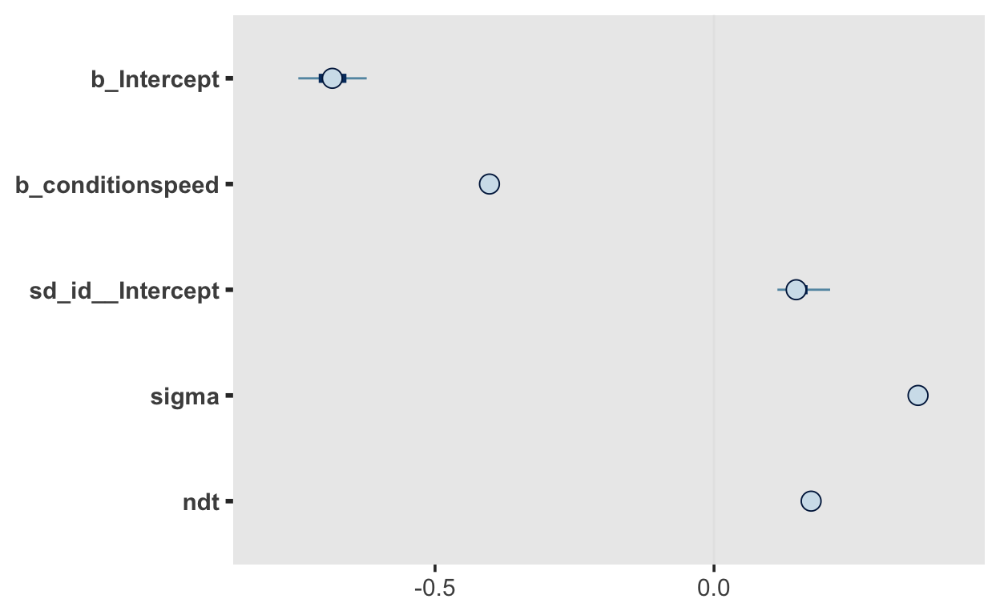
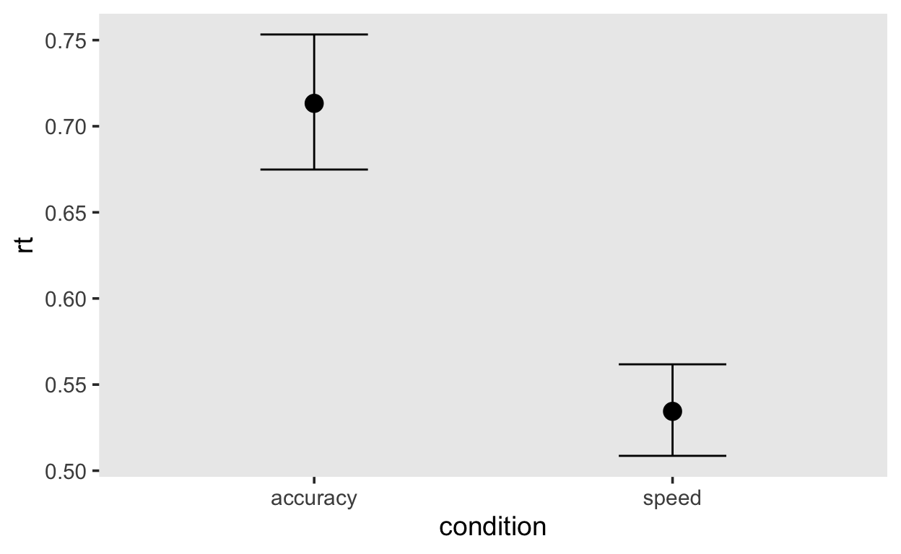
Wir können dieses Modell verbessern, indem wir für jede Person einen eigenen shift Parameter \(\theta\) schätzen. Da dieser \(>0\) sein muss, wird ebenfalls ein lineares Modell auf der Logarithmusskala benutzt.
# intial values für den Mittelwert des shift Parameters
inits <- function() {
list(Intercept_ndt = -1.7)
}
m2 <- brm(bf(rt ~ condition + (1|id),
ndt ~ 1 + (1|id)),
family = shifted_lognormal(),
prior = priors,
data = df_speed_acc,
inits = inits,
init_r = 0.05,
control = list(max_treedepth = 12),
file = 'models/m2_shiftedlognorm_ndt')
# oder ¨äquivalent dazu
formula <- bf(rt ~ condition + (1|id),
ndt ~ 1 + (1|id))
m2 <- brm(formula,
family = shifted_lognormal(),
prior = priors,
data = df_speed_acc,
inits = inits,
init_r = 0.05,
control = list(max_treedepth = 12),
file = 'models/m2_shiftedlognorm_ndt')
summary(m2)
Family: shifted_lognormal
Links: mu = identity; sigma = identity; ndt = log
Formula: rt ~ condition + (1 | id)
ndt ~ 1 + (1 | id)
Data: df_speed_acc (Number of observations: 27936)
Samples: 4 chains, each with iter = 2000; warmup = 1000; thin = 1;
total post-warmup samples = 4000
Group-Level Effects:
~id (Number of levels: 17)
Estimate Est.Error l-95% CI u-95% CI Rhat Bulk_ESS
sd(Intercept) 0.31 0.06 0.21 0.45 1.00 1115
sd(ndt_Intercept) 0.32 0.06 0.22 0.47 1.00 897
Tail_ESS
sd(Intercept) 1351
sd(ndt_Intercept) 1707
Population-Level Effects:
Estimate Est.Error l-95% CI u-95% CI Rhat Bulk_ESS
Intercept -0.86 0.08 -1.01 -0.70 1.01 799
ndt_Intercept -1.47 0.08 -1.64 -1.32 1.01 802
conditionspeed -0.48 0.01 -0.49 -0.47 1.00 3299
Tail_ESS
Intercept 1234
ndt_Intercept 1047
conditionspeed 2383
Family Specific Parameters:
Estimate Est.Error l-95% CI u-95% CI Rhat Bulk_ESS Tail_ESS
sigma 0.43 0.00 0.42 0.43 1.00 3451 2812
Samples were drawn using sampling(NUTS). For each parameter, Bulk_ESS
and Tail_ESS are effective sample size measures, and Rhat is the potential
scale reduction factor on split chains (at convergence, Rhat = 1).mcmc_plot(m2)
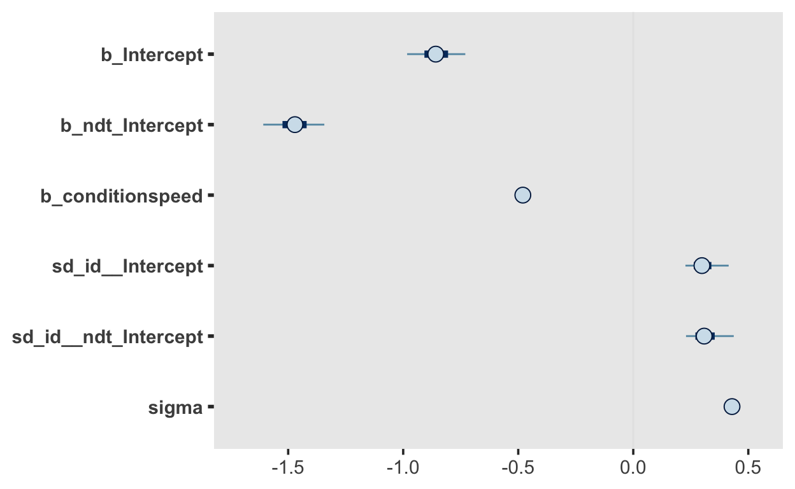
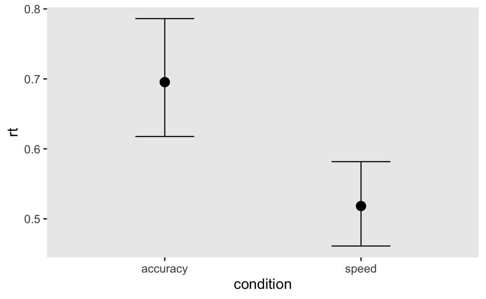
conditional_effects(m2, method='posterior_predict')
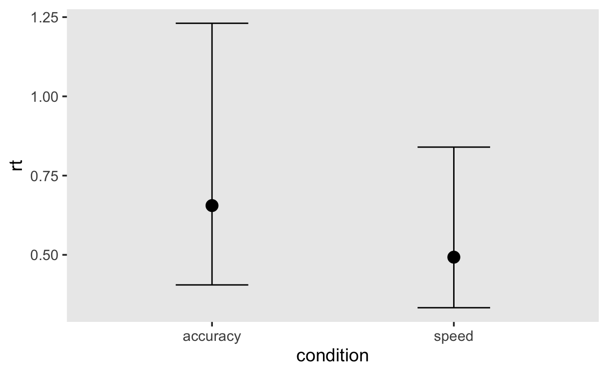
Posterior predictive check
pp_check(m2,
type = "dens_overlay_grouped",
group = "condition",
nsamples = 200)
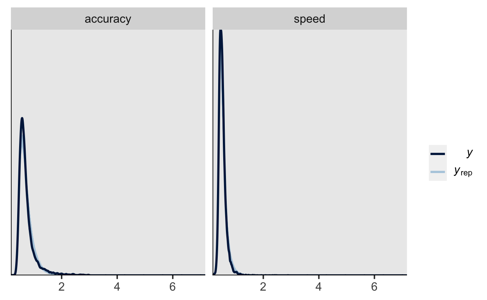